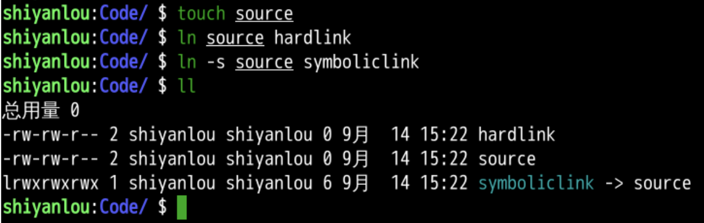
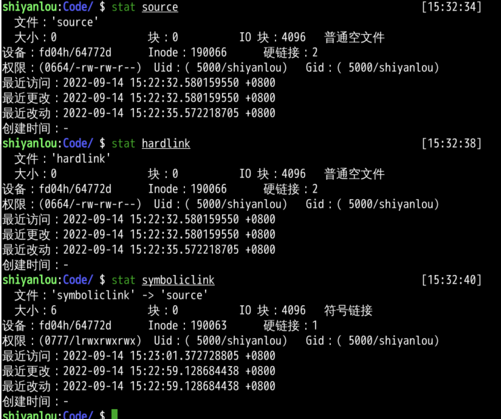
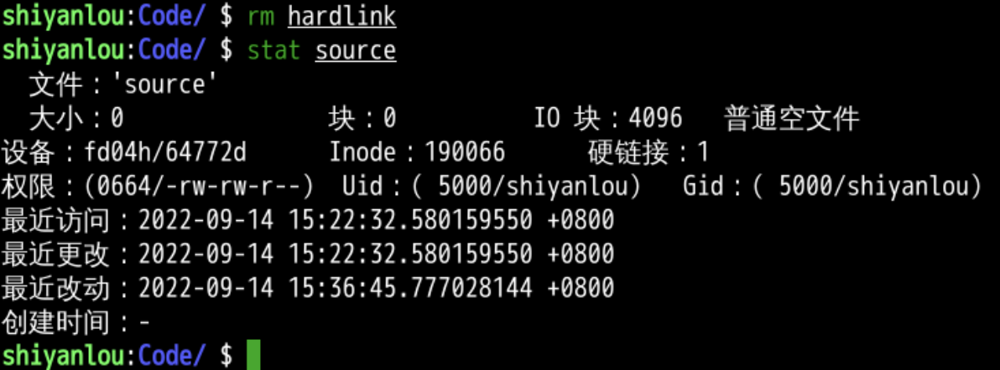
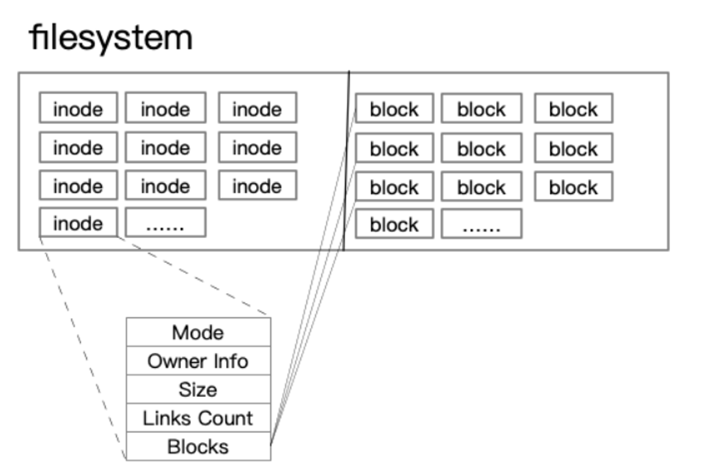
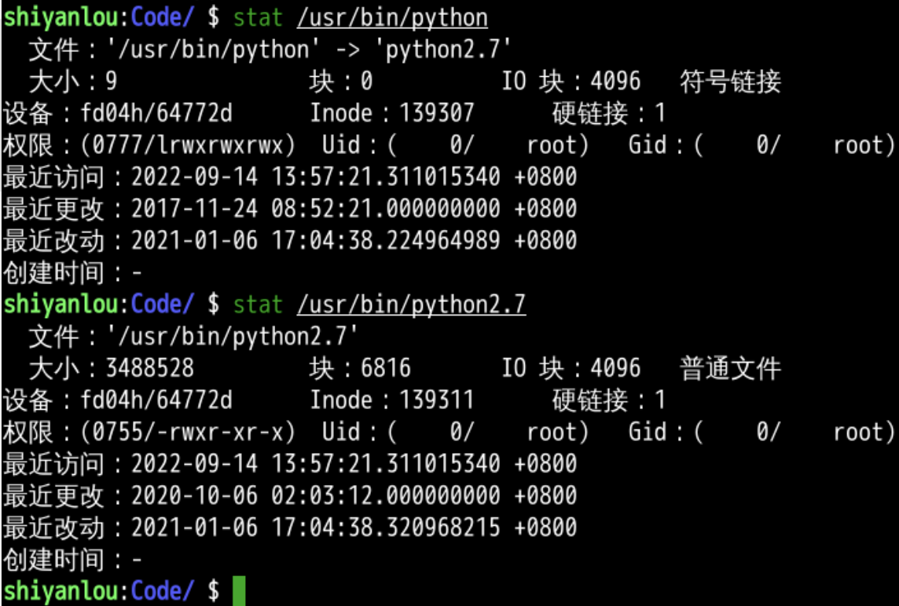
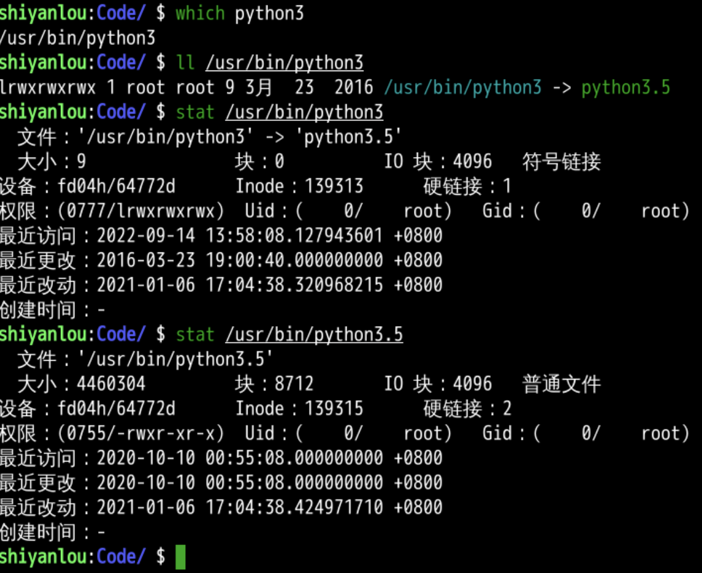
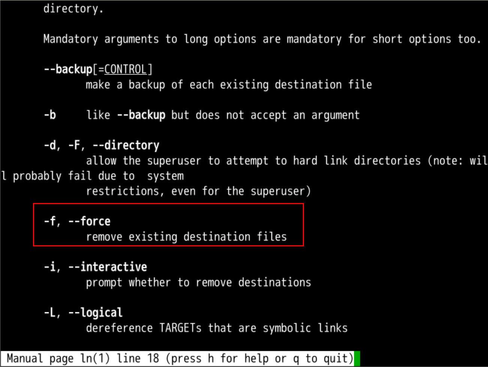
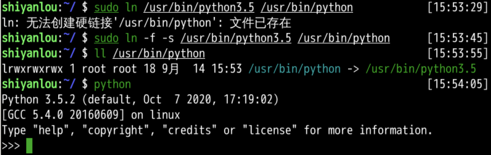

文件存储信息(stat)
回忆
- 上次研究了xclip
- xclip 可以将文件内容输出到剪贴板
- cat oeasy.txt | xclip -selection clipboard
- 然后再粘贴到合适的地方
- 纯键盘操作还是很方便的
- 文件内容就这样被提取到了内存
- xclip 可以将文件内容输出到剪贴板

- 文件内容之外
- 文件还包括什么呢？
- 文件本质是一个索引节点
- 这个索引节点究竟长什么样子？🤔
- 文件还包括什么呢？
- 背后又是什么原理？🤔
构建环境
- 先建立
- 源
- 软链接
- 硬链接

- 用stat 观察文件
stat
- 这三个文件都不大
- 可以看到source和hardlink对应同一个索引节点(inode)
- symboliclink 引用到一个新的索引节点

- 索引节点上面引用数为2
- 如果我们删除掉hardlink
- 引用数会有变化么？
删除硬链接

- 删除之后引用数确实少了1
- 如果再把source删掉
- 应用数为0
- 就可以被删掉用作别的用途了
- 那究竟什么是inode呢
inode
- inode存储着文件的元数据
- 元数据中包括
- 大小
- 硬链接数
- 权限
- 最近访问
- 最近更改
- 最近打开时间
- blocks等

- blocks是硬盘上具体存储文件内容的块
-
落实到物理硬盘的扇区上
-
我们看看python的那个软链接
观察

- 这个python是一个符号链接
- 链接到python2.7
- python2.7文件不小
- 有6816块
- 我想把python链接到python3可以么？
- 首先看看什么是python3
观察

- python3也是一个软链接
- 指向python3.5
- python3.5文件不小
- 8712块
- 比python2.7的6816块大
- 我可以让python软链接指向python3.5么？
查文档

- -f 强制替换
- 去试试
更新软链接

- 这样我们就把这个软链接更新了
总结
- 我们这次研究了文件存储信息
- stat
- stat可以显示文件的元数据，包括
- 大小
- 硬链接数
- 权限
- 最近访问
- 最近更改
- 最近打开时间
- blocks等
- 如果一个索引节点(inode)被引用数为0
- 那么这个索引节点就可以被回收了
- 这个就是硬链接的基础
- 除了硬链接之外我们还有什么办法定义命令吗？🤔
- 下次再说👋